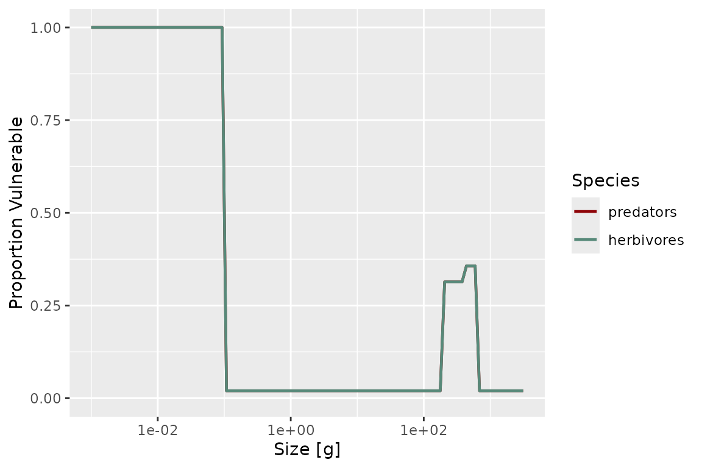
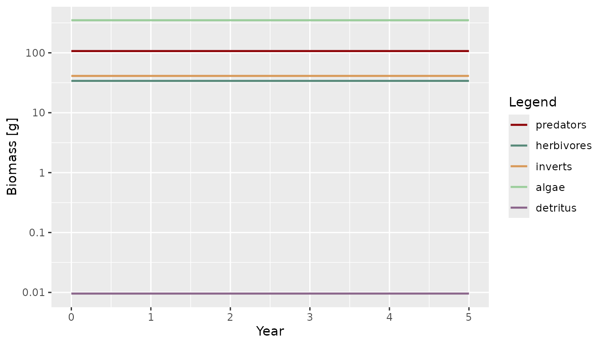

Overview
mizerReef is an extension package for mizer that adds three ecological processes to a standard multispecies size-spectrum model, all motivated by structurally complex habitats such as coral reefs:
- predation refuge — structural complexity lets some prey hide from some predators, reducing the encounter and mortality rates that would otherwise apply,
- algae and detritus — two unstructured (not size-structured) benthic resource pools that herbivorous and detritivorous species feed on,
- senescence mortality — an extra size-dependent mortality term representing non-predation death close to a species’ maximum size.
The package uses the mechanisms described in
vignette("guide-create-extension-package", package = "mizer"):
| Extension mechanism | Used for |
|---|---|
.onLoad + registerExtension()
|
Register the package with mizer so params objects know which extensions they need |
| S4 marker classes + S3 dispatch | Define mizerReef/mizerReefSim so
reef-specific methods run automatically |
project* rate methods |
Override Encounter, FeedingLevel, PredMort and Mort to add refuge, satiation, and senescence effects |
setComponent() |
Add algae and detritus as scalar dynamical components |
utils::upgrade() |
Migrate objects saved with older mizerReef versions |
All of these are wired together inside newReefParams(),
the single entry point for building a reef model.
The mizerReef marker class
mizerReef defines two S4 marker subclasses:
setClass("mizerReef", contains = "MizerParams")
setClass("mizerReefSim", contains = "MizerSim")These classes carry no extra slots — all reef-specific state (refuge,
algae and detritus parameters) lives in
other_params(params). The classes exist purely to trigger
S3 dispatch, exactly as described for marker classes in
vignette("guide-create-extension-package", package = "mizer").
Registration via .onLoad
.onLoad <- function(libname, pkgname) {
mizer::registerExtension(pkgname, requirement = "sizespectrum/mizerReef")
}This registers mizerReef with mizer’s extension chain as soon as the
package is loaded. newReefParams() then records the chain
and coerces the result to the marker class at the very end of
construction:
params@extensions <- mizer::getRegisteredExtensions()
params <- mizer::coerceToExtensionClass(params)Recording the chain in params@extensions is what lets
project() produce a mizerReefSim automatically
(via MizerSim()’s own call to
coerceToExtensionClass()), and what lets
readParams() restore the correct class — and warn about
missing or outdated extensions — when a saved object is reloaded in a
later session.
A known gap: bundled example models and multiple extensions
mizerReef ships two pre-built example models as package data
(caribbean_10_model, caribbean_3_model).
.onLoad also contains a makeActiveBinding()
call, scoped to caribbean_3_model only, intended to
re-coerce that object to the correct class if a second mizer
extension is loaded alongside mizerReef, since a bundled
.rda is fixed at save time and can’t know in advance what
else will be loaded in the same session. In the current mizer/mizerReef
versions this mechanism does not fire — exists() on the
bundled object inside .onLoad is always FALSE
at that point, so the active binding is never installed. This is not
mizerReef-specific: the identical dead-code pattern exists in
mizerShelf’s own current source for its bundled
NWMed_params object.
For everyday single-extension use this is harmless, since both
bundled objects already carry the correct class from when they were
saved. It would only matter if you loaded mizerReef together with a
second dispatching extension on one of these two specific objects — for
example, the mizerMR combination shown in
vignette("using-multiple-resources"). That combination does
work (mizer’s extension chain, a separate mechanism, correctly promotes
the object’s class when both extensions are registered), but the
underlying .onLoad dead-code gap described above is still
unfixed upstream; see inst/to-do-list.txt for the current
state.
Methods dispatched on mizerReef
| Method | What it adds |
|---|---|
projectEncounter.mizerReef() |
Recomputes encounter for refuge-blocked predators using vulnerability-reduced prey abundance |
projectFeedingLevel.mizerReef() |
Gives predators without a satiation response unlimited intake capacity |
projectPredMort.mizerReef() |
Discounts predation mortality from refuge-blocked predators by prey vulnerability |
projectMort.mizerReef() |
Adds senescence mortality on top of the standard mortality |
getBiomass.mizerReefSim() |
Adds algae and detritus biomass to the species biomasses |
removeSpecies.mizerReef() |
Updates the algae/detritus encounter-rate matrices
rho
|
upgrade.mizerReef() |
Migrates objects created with an earlier mizerReef 2.x layout to the
current one (automatic; for mizerReef 1.x objects, see
upgradeReefParams() instead) |
steady.mizerReef() |
Runs reefSteady(), so the algae and detritus pools are
tuned along with the fish sub-model |
tuneSteadyState.mizerReef() |
The same, under mizer 3.3’s current name for
steady()
|
Every one of these methods calls NextMethod() at least
once, so multiple dispatching extensions can modify the same
rate or generic without silently overwriting each other’s contribution —
provided every extension involved follows the same convention.
This is not automatic just because a package touches a mizer model:
mizer still supports an older, non-chaining mechanism
(mizer::setRateFunction()) that swaps in a single named
function for a rate, with no dispatch at all, and a params object uses
one mechanism or the other for a given rate, never both. See the caveat
in vignette("using-multiple-resources") for a concrete
example (mizerReef’s dispatching encounter-rate chain versus therMizer’s
non-chaining setRateFunction() approach, and why combining
them does not currently give you both effects together). The next two
sections look at mizerReef’s own rate methods in detail, because they
illustrate both the easy case (a purely additive modification) and a
harder case that needed more thought.
Predation refuge: a multiplicative rate modification
Three species parameters control how refuge affects a species:
-
refuge_user— does this species hide in refuge at all? -
blocked_pred— is this species’ foraging hindered by refuge (i.e. is it a predator that struggles to reach prey hiding in structure)? -
satiation— does this species show a satiation response, or can it always find as much food as it can physically ingest?
reefVulnerable() computes, for each species and size,
the proportion of individuals not protected by refuge — using
one of four profile methods ("sigmoidal",
"binned", "competitive",
"noncomplex") set with setRefuge().
"competitive" is the most detailed: refuge is a limited
resource that same-size individuals compete for, so vulnerability
depends on the actual local density of competitors at each time step,
not just on size.
plotVulnerable(params)
Why this can’t be a simple additive override
mizerShelf’s getBiomass.mizerShelf() adds detritus and
carrion biomass on top of the standard result — a purely
additive modification that a single NextMethod() call
expresses perfectly. Predation refuge is different: it
discounts the prey available to blocked_pred
predators before the encounter and predation-mortality integrals are
computed, i.e. it enters multiplicatively, and only for
a subset of predators. A single NextMethod() call cannot
express “recompute this integral with different inputs for these rows
only”.
projectEncounter.mizerReef() and
projectPredMort.mizerReef() solve this by calling the rate
calculation twice — once with unmodified inputs to get the standard
result, and once more with a vulnerability-modified input to get the
correction — and then combining the two by predator row. Both calls go
through NextMethod(), so both stay fully composable:
projectEncounter.mizerReef <- function(params, n, n_pp, n_other, t = 0, ...) {
blocked_pred <- params@species_params$blocked_pred == TRUE
if (!any(blocked_pred)) {
return(NextMethod())
}
vulnerable <- reefVulnerable(params, n, n_pp, n_other, t,
new_rd = reefDegrade(params, n, n_pp, n_other, t, ...))
# Standard encounter (used as-is for predators unaffected by refuge)
encounter <- NextMethod()
# Encounter recomputed with vulnerability-reduced prey abundance (used
# for predators whose foraging is blocked by refuge). Reassigning the
# formal `n` and then calling NextMethod() bare sends the reduced prey
# abundance down the full extension chain.
n <- vulnerable * n
encounter_vul <- NextMethod()
encounter[blocked_pred, ] <- encounter_vul[blocked_pred, ]
encounter
}projectPredMort.mizerReef() follows the same pattern,
using the linearity of the predation-mortality calculation in
pred_rate to isolate the contribution of
blocked_pred predators by zeroing out every other
predator’s row before recomputing:
projectPredMort.mizerReef <- function(params, n, n_pp, n_other, t = 0,
pred_rate, ...) {
blocked_pred <- params@species_params$blocked_pred == TRUE
if (!any(blocked_pred)) {
return(NextMethod())
}
vulnerable <- reefVulnerable(params, n, n_pp, n_other, t,
new_rd = reefDegrade(params, n, n_pp, n_other, t, ...))
pm <- NextMethod()
pred_rate[!blocked_pred, ] <- 0
pm_blocked <- NextMethod()
pm + (vulnerable - 1) * pm_blocked
}Because both calls go through NextMethod() —
the standard one and the vulnerability correction — a lower extension
package’s contribution to Encounter or PredMort is preserved for every
predator, blocked or not. The trick is that a bare
NextMethod() forwards the current values of the
method’s formal arguments as bound in this frame, not the values the
generic was originally called with. So reassigning
n <- vulnerable * n (or zeroing rows of
pred_rate) before the second bare call is enough to
recompute the integral with modified inputs through the full
chain, with no direct call to mizer’s base rate function
needed.
A NextMethod() pitfall worth knowing about
The obvious way to recompute with a modified input is to pass an
override directly to NextMethod(),
e.g. NextMethod(n = vulnerable * n). This looks like it
should work — R does let you override a single argument this way — but
testing surfaced a serious problem: once a generic has more than two
formal arguments, passing an explicit named override to
NextMethod() corrupts the matching of the other
arguments. A minimal reproduction:
f <- function(params, n, n_pp, n_other, t = 0, ...) UseMethod("f")
f.default <- function(params, n, n_pp, n_other, t = 0, ...) {
cat("default sees length(n_pp) =", length(n_pp), "\n")
}
f.foo <- function(params, n, n_pp, n_other, t = 0, ...) {
NextMethod() # fine
NextMethod(n = n * 2) # n_pp comes out wrong!
}Calling this with a 2×3 matrix n and a length-5 vector
n_pp prints the correct length(n_pp) = 5 for
the first call, but length(n_pp) = 6 for the second —
n_pp has silently been overwritten by (part of) the new
n. This is why the two rate methods above never pass an
argument to NextMethod(). Instead they reassign the formal
in the local frame (n <- vulnerable * n) and then call
NextMethod() bare: the modified value still propagates down
the chain, but because no named argument is supplied, the matching of
the remaining arguments is left intact. Reassigning-then-calling-bare
gives you the composability of the chain and the modified
input, with none of the argument-corruption.
Algae and detritus: two unstructured resource components
Algae and detritus are each registered as a scalar other
component via setComponent() inside
newReefParams():
params <- mizer::setComponent(
params, "algae",
initial_value = 1,
dynamics_fun = "algae_dynamics",
encounter_fun = "encounter_contribution",
component_params = list(rho = rho_alg, capacity = ..., growth = ...))
params <- mizer::setComponent(
params, "detritus",
initial_value = 1,
dynamics_fun = "detritus_dynamics",
encounter_fun = "encounter_contribution",
component_params = list(rho = rho_det, capacity = ..., ...))Both share the same encounter_contribution() helper,
which adds
to species
’s
encounter rate, where
is the current biomass of the component and
is a species- and size-dependent encounter-rate coefficient stored in
other_params(params)[[component]] – the same location
setComponent()’s component_params argument
writes to above, and what
mizer::getComponent()/removeComponent() read
from, so algae and detritus need no special-casing here:
encounter_contribution <- function(params, n_other, component, ...) {
params@other_params[[component]]$rho * n_other[[component]]
}rho is initialised in newReefParams() so
that each species can reach feeding level f0 at maximum
body size once its algae, detritus, and normal prey encounter are all
accounted for.
Both components follow the same dynamical structure — production balanced against biomass-proportional consumption, solved analytically within each time step to avoid Euler-step instabilities:
For algae, production is a fixed, literature-informed constant growth
rate that is not retuned to match consumption – real algal
primary production is not driven by grazer demand, so
[tuneUR()]/[tuneUR_cc()] instead solve for the algae biomass
that balances this fixed production against current consumption (see
algae_consumption()’s documentation for the ecological
rationale and citations). For detritus, production genuinely does depend
on the rest of the system (fish egestion, senescence) plus an external
flux, so [tuneUR()]/[tuneUR_cc()] instead solve for that external flux
to balance a given detritus biomass against consumption. Both have
getters/setters for inspecting and tuning the steady-state balance,
e.g.:
detritus_lifetime(params)
#> [1] 3.17783e-13
algae_biomass(params)
#> [1] 2.171433e-10
getBiomass.mizerReefSim()
Standard getBiomass() only returns species biomasses.
mizerReef’s method — following the same pattern as mizerShelf’s
getBiomass.mizerShelf() — appends the algae and detritus
biomass by reading them directly out of n_other:
getBiomass.mizerReefSim <- function(object, ...) {
sim <- object
b <- unclass(NextMethod())
dimname_names <- names(dimnames(b))
comp_mat <- matrix(unlist(sim@n_other),
nrow = nrow(sim@n_other), ncol = ncol(sim@n_other))
dimnames(comp_mat) <- dimnames(sim@n_other)
b <- cbind(b, comp_mat[rownames(b), , drop = FALSE])
names(dimnames(b)) <- dimname_names
mizer::ArrayTimeBySpecies(b, value_name = "Biomass", units = "g",
params = sim@params)
}Because plotBiomass() calls getBiomass()
internally, this single method is enough to make biomass plots include
algae and detritus alongside fish species — and it works regardless of
whether mizer or mizerReef was loaded first,
since it is triggered by S3 dispatch on the object’s class rather than
by masking mizer’s function.
sim <- project(params, t_max = 5, progress_bar = FALSE)
plotBiomass(sim)
Senescence and satiation: projectMort and
projectFeedingLevel
Two of the four rate methods are the simple, purely
additive/input-transform case that NextMethod() handles
cleanly.
projectMort.mizerReef() adds senescence mortality,
reefSenMort(), on top of the standard mortality:
projectMort.mizerReef <- function(params, n, n_pp, n_other, t = 0,
f_mort, pred_mort, ...) {
mort <- NextMethod()
if (isTRUE(params@other_params$include_sen_mort)) {
mort <- mort + reefSenMort(params, ...)
}
mort
}projectFeedingLevel.mizerReef() reassigns
params@intake_max to Inf for species without a
satiation response before delegating — a formal argument
reassigned inside a method body is correctly picked up by a bare
NextMethod() call (unlike the explicit-override case
described above):
projectFeedingLevel.mizerReef <- function(params, n, n_pp, n_other, t = 0,
encounter, ...) {
params@intake_max[params@species_params$satiation == FALSE] <- Inf
fl <- NextMethod()
fl[is.na(fl)] <- 0
fl
}
removeSpecies.mizerReef()
Removing a species must also drop its row from the algae and detritus
rho matrices, which live outside the standard mizer slots
that removeSpecies.MizerParams() already knows how to
trim:
removeSpecies.mizerReef <- function(params, species, ...) {
keep <- !valid_species_arg(params, species, return.logical = TRUE)
p <- NextMethod()
p@other_params$algae$rho <-
p@other_params$algae$rho[keep, , drop = FALSE]
p@other_params$detritus$rho <-
p@other_params$detritus$rho[keep, , drop = FALSE]
p
}
p2 <- removeSpecies(params, "predators")
species_params(p2)$species
#> [1] "herbivores" "inverts"Upgrading objects saved with older mizerReef versions
An earlier internal design of mizerReef 2.x (never publicly released)
stored refuge, algae, and detritus parameters in three custom S4 slots
(refuge_params, algae_params,
detritus_params) rather than in
other_params(). Since a dispatching extension’s data must
live in other_params() rather than in new S4 slots (see the
checklist in
vignette("guide-create-extension-package", package = "mizer")),
those slots were removed from the class definition before release —
which means an object saved with that design needs to be migrated before
it can be used. upgrade.mizerReef() handles this
automatically, and will also handle any future within-2.x layout changes
the same way:
upgrade.mizerReef <- function(object, ...) {
tryCatch({
old_refuge <- .hasSlot(object, "refuge_params")
old_algae <- .hasSlot(object, "algae_params")
old_det <- .hasSlot(object, "detritus_params")
if (old_refuge && is.null(object@other_params$refuge_params)) {
object@other_params$refuge_params <- slot(object, "refuge_params")
}
if (old_algae && is.null(object@other_params$algae)) {
object@other_params$algae <- slot(object, "algae_params")
}
if (old_det && is.null(object@other_params$detritus)) {
object@other_params$detritus <- slot(object, "detritus_params")
}
}, error = function(e) NULL)
object
}The old S4 slots were literally named
algae_params/detritus_params
(.hasSlot()/slot() above read those slot names
directly), which is a coincidental naming match with an unrelated, later
bug:
other_params$ algae_params/detritus_params was
for a while also used internally as a second, non-canonical copy of the
live algae/detritus component data, duplicating
other_params$algae/detritus (the location
mizer::setComponent()/getComponent() actually
use). That duplication has since been removed –
other_params$algae/detritus is the single
storage location, which is also why the migration above now targets it
directly rather than
other_params$algae_params/detritus_params.
This method is idempotent and never touches the version stamp, per
the upgrade contract described in
vignette("guide-create-extension-package", package = "mizer"):
mizer’s own orchestrator (triggered by validParams(), which
runs on essentially every entry point) calls it once and re-stamps the
object afterwards.
How the pieces fit together in newReefParams()
newReefParams <- function(species_params, method, method_params, ...) {
# Standard multispecies model
params <- newMultispeciesParams(species_params, ...)
# Predation refuge: species parameters + refuge profile
params <- setRefuge(params, method = method, method_params = method_params, ...)
params <- getRefuge(params, ...)
# Algae and detritus: scalar dynamical components
params <- setAlgaeParams(params, ...)
params <- setDetritusParams(params, ...)
# ... compute rho so each species reaches feeding level f0 ...
params <- mizer::setComponent(params, "algae", ...,
dynamics_fun = "algae_dynamics",
encounter_fun = "encounter_contribution")
params <- mizer::setComponent(params, "detritus", ...,
dynamics_fun = "detritus_dynamics",
encounter_fun = "encounter_contribution")
# Senescence and external mortality parameters
params <- setExtMortParams(params, ...)
# Register the extension chain and promote to the mizerReef S4 class.
# Rate overrides (Encounter, FeedingLevel, PredMort, Mort) are handled by
# the project*.mizerReef methods shown above, not by setRateFunction(),
# so they compose with other extension packages.
params@extensions <- mizer::getRegisteredExtensions()
params <- mizer::coerceToExtensionClass(params)
params
}The marker-class promotion happens last, after every other slot has
been populated — exactly as
vignette("guide-create-extension-package", package = "mizer")
recommends, so that no earlier step in construction accidentally
dispatches to a reef-specific method on a not-yet-fully-built
object.
Summary
mizerReef illustrates the following extension mechanisms working together:
.onLoad+registerExtension()— announces mizerReef to mizer’s extension chain as soon as the package is loaded.S4 marker classes + S3 dispatch —
mizerReefandmizerReefSimensure that reef-specific methods (projectEncounter,projectFeedingLevel,projectPredMort,projectMort,getBiomass,removeSpecies,steady,tuneSteadyState) are dispatched automatically, with every method callingNextMethod()at least once so the standard mizer pipeline, and any other extension package stacked below mizerReef, keeps working. The rate methods all chain throughNextMethod(); the two steady-state methods instead replace the run wholesale, because reaching a reef steady state means tuning the algae and detritus pools that mizer knows nothing about (see?reefSteady). Before mizerReef 2.0.2 those two were not methods at all:reefSteady()was written overmizer::steady()withassignInNamespace(), which replaced mizer’s generic for every model in the session, reef or not.setComponent()— algae and detritus are scalar dynamical variables whose biomass evolves each time step and whose contribution to the encounter rate is automatically included via a sharedencounter_contribution()helper.A multiplicative rate override, handled without a full rewrite — predation refuge cannot be expressed as a purely additive
NextMethod()correction the way mizerShelf’s detritus and carrion biomass can. mizerReef instead callsNextMethod()twice — once with unmodified inputs for the composable standard result, and once more with vulnerability-modified inputs to get the correction — and combines the two by predator row, so both calls (and any extension package stacked below mizerReef) stay fully composable. This is a pattern worth reusing for any extension whose modification depends on a subset of predators or a transformed input, rather than a term added on top.utils::upgrade()— migrates objects created with mizerReef versions that stored data in custom S4 slots rather than inother_params().
Together, these mechanisms let mizerReef add predation refuge,
benthic resource coupling, and senescence mortality to any mizer model
without modifying the mizer source code, and without the model’s
behaviour depending on the order in which mizer and
mizerReef happen to be loaded.